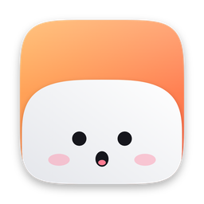

MoMoThis source archive does not include a signed or notarized MoMo app. Signing and notarization depend on the credentials used when building the macOS version.
A different signing identity or bundle identifier can affect access to saved keys. This local rebrand does not include a key migration.
No compiled MoMo installer is included. Follow the Windows build instructions to generate MoMo-Windows-setup.exe from the local source.
The same local source can build an AppImage, a .deb and a .rpm. See the Linux build instructions. No compiled MoMo Linux packages are included.
Open Settings → Claude Code → Install hooks, review the changes, confirm, then start a new Claude Code session.
Yes. Open Settings → Gemini CLI → Install hooks or Settings → Antigravity → Install hooks. The same backup-and-diff flow as Claude Code applies. Once installed, each gemini or agy session gets its own pill in the island.
Add your API key in Settings: Settings → Anthropic API for Claude, or Settings → Chat — other providers (macOS) for Google AI (Gemini) or OpenAI. API usage is billed by the provider, separately from any subscription.
Check its key in Settings. Up to 4 pills can be active at once in addition to the main workspace tool — see Settings → Active pills.
Active pills are the coding tools, agents and AI providers you declare in Settings → Active pills. The Main picker at the top lets you choose your primary workspace tool (VS Code, Cursor, Codex or Antigravity — GitHub build only). You can then add up to 4 more pills: Gemini CLI, Anthropic, Google AI, OpenAI and service integrations. An agent that sends momo_agent in its hook payload still gets its own automatic pill regardless.
Yes. Install the Claude Code hooks (Settings → Claude Code → Install hooks). Claude Code started in Cursor's terminal then shows up on the Cursor pill, and its permission requests can be answered from the notch, like in VS Code. Cursor's own agent shows up too when Cursor loads Claude Code's hooks; its requests are still answered in Cursor. Pick Cursor as your Main tool if that's where you code.
Yes. Open Settings → Codex Hooks → Install hooks. MoMo shows you the changes to ~/.codex/hooks.json before writing anything. Once installed, open Codex and run /hooks, or open Hooks in Codex's settings, to review and trust the hooks — Codex asks for this once. After that, your Codex sessions show up on the Codex pill, and permission requests show up with Allow and Deny in the notch.
Check the speaker icon in the notch header and the volume in Settings.
On Mac, Claude Sonnet 4.6 by default (Anthropic). Switch provider and model by clicking the model name above the chat box. For Anthropic, the model can also be set in Settings → Anthropic API. Each model is billed at its own price by the provider.
Yes. On an iMac, a Mac mini, or a MacBook with its lid closed on an external display, Mochi sits in a small bar at the top of the main screen. With the lid open, it stays in the notch.
Remove hooks first: Settings → Claude Code → Uninstall, and if you installed them, also Settings → Gemini CLI → Uninstall and Settings → Antigravity → Uninstall. Then quit the app and move it to the Trash. Optionally delete ~/Library/Application Support/NotchBuddy.
On Windows: same Uninstall button for the hooks, then Windows Settings → Apps → MoMo → Uninstall. Optionally delete %LOCALAPPDATA%\MoMo.
On Linux: same Uninstall button for the hooks, then sudo apt remove momo or sudo dnf remove momo, or delete the AppImage. Optionally delete ~/.config/momo, ~/.local/share/momo, ~/.local/share/app.momo.desktop and ~/.cache/momo.
Cette archive source ne contient pas d’app MoMo signée ou notarisée. La signature et la notarisation dépendent des identifiants utilisés lors de la compilation macOS.
Une identité de signature ou un identifiant de bundle différent peut modifier l’accès aux clés enregistrées. Cette adaptation locale ne comprend pas de migration des clés.
Aucun installeur MoMo compilé n’est inclus. Suis le guide Windows pour générer MoMo-Windows-setup.exe depuis le code source local.
Le même code source local permet de créer une AppImage, un .deb et un .rpm. Voir les instructions Linux. Aucun paquet MoMo Linux compilé n’est inclus.
Réglages → Claude Code → Install hooks, vérifie les changements, confirme, puis lance une nouvelle session Claude Code.
Oui. Ouvre Réglages → Gemini CLI → Install hooks ou Réglages → Antigravity → Install hooks. Le même flux sauvegarde + diff qu’avec Claude Code s’applique. Une fois installé, chaque session gemini ou agy obtient sa propre pastille dans l’island.
Ajoute ta clé d’API dans les Réglages : Réglages → Anthropic API pour Claude, ou Réglages → Chat — other providers (macOS) pour Google AI (Gemini) ou OpenAI. L’API est facturée par le fournisseur, à part de tout abonnement.
Vérifie sa clé dans les Réglages. Jusqu’à 4 pastilles peuvent être actives en même temps, en plus de l’outil de code principal — voir Réglages → Active pills.
Les Active pills sont les outils de code, agents et fournisseurs IA que tu déclares dans Réglages → Active pills. Le sélecteur Main en haut te permet de choisir ton outil principal (VS Code, Cursor, Codex ou Antigravity — version GitHub uniquement). Tu peux ensuite ajouter jusqu’à 4 pastilles supplémentaires : Gemini CLI, Anthropic, Google AI, OpenAI et des intégrations de services. Un agent qui envoie momo_agent dans son payload obtient quand même sa pastille automatique.
Oui. Installe les hooks Claude Code (Réglages → Claude Code → Install hooks). Claude Code lancé dans le terminal de Cursor apparaît alors sur la pastille Cursor, et tu peux répondre à ses demandes d’autorisation depuis le notch, comme dans VS Code. L’agent de Cursor apparaît aussi quand Cursor charge les hooks de Claude Code ; ses demandes se règlent encore dans Cursor. Choisis Cursor comme outil principal si c’est là que tu codes.
Oui. Ouvre Réglages → Codex Hooks → Install hooks. MoMo te montre les changements apportés à ~/.codex/hooks.json avant d’écrire quoi que ce soit. Une fois les hooks installés, ouvre Codex et tape /hooks, ou ouvre Hooks dans les réglages de l’app, pour les passer en revue et leur faire confiance — Codex ne te le demande qu’une fois. Ensuite, tes sessions Codex apparaissent sur la pastille Codex, et les demandes d’autorisation apparaissent avec Allow et Deny dans le notch.
Vérifie l’icône haut-parleur dans l’en-tête du notch et le volume dans les Réglages.
Sur Mac, Claude Sonnet 4.6 par défaut (Anthropic). Change de fournisseur et de modèle en cliquant sur le nom du modèle au-dessus du champ de chat. Pour Anthropic, le modèle peut aussi être défini dans Réglages → Anthropic API. Chaque modèle est facturé à son propre tarif par le fournisseur.
Oui. Sur un iMac, un Mac mini ou un MacBook capot fermé branché à un écran externe, Mochi s’affiche dans une petite barre en haut de l’écran principal. Capot ouvert, il reste dans le notch.
Retire d’abord les hooks : Réglages → Claude Code → Uninstall, et si tu les as installés, aussi Réglages → Gemini CLI → Uninstall et Réglages → Antigravity → Uninstall. Puis quitte l’app et mets-la à la corbeille. Tu peux aussi supprimer ~/Library/Application Support/NotchBuddy.
Sous Windows : le même bouton Uninstall pour les hooks, puis Paramètres Windows → Applications → MoMo → Désinstaller. Tu peux aussi supprimer %LOCALAPPDATA%\MoMo.
Sous Linux : le même bouton Uninstall pour les hooks, puis sudo apt remove momo ou sudo dnf remove momo, ou supprime l’AppImage. Tu peux aussi supprimer ~/.config/momo, ~/.local/share/momo, ~/.local/share/app.momo.desktop et ~/.cache/momo.